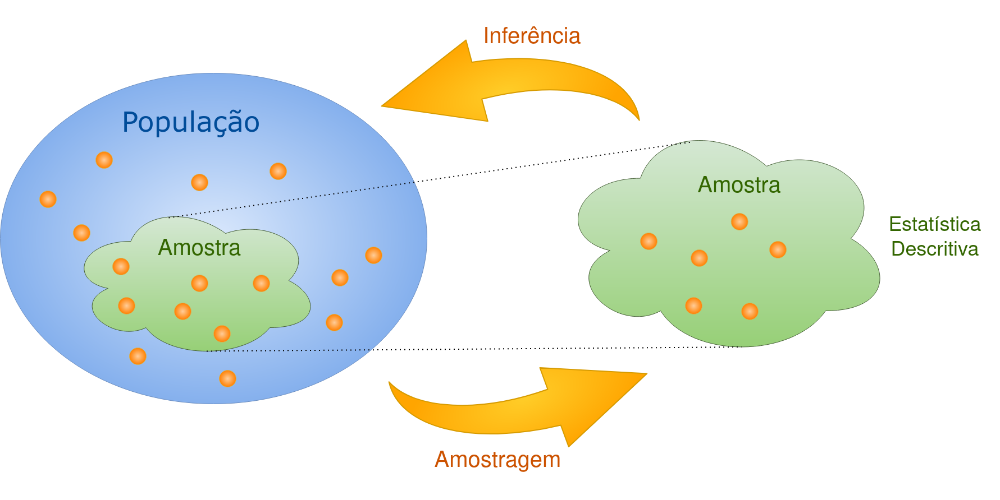
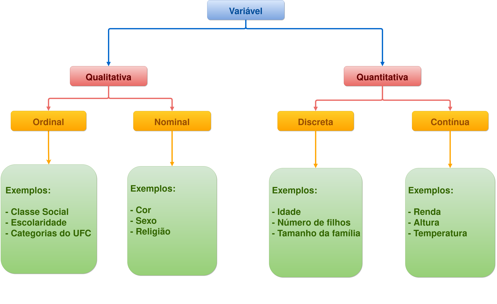
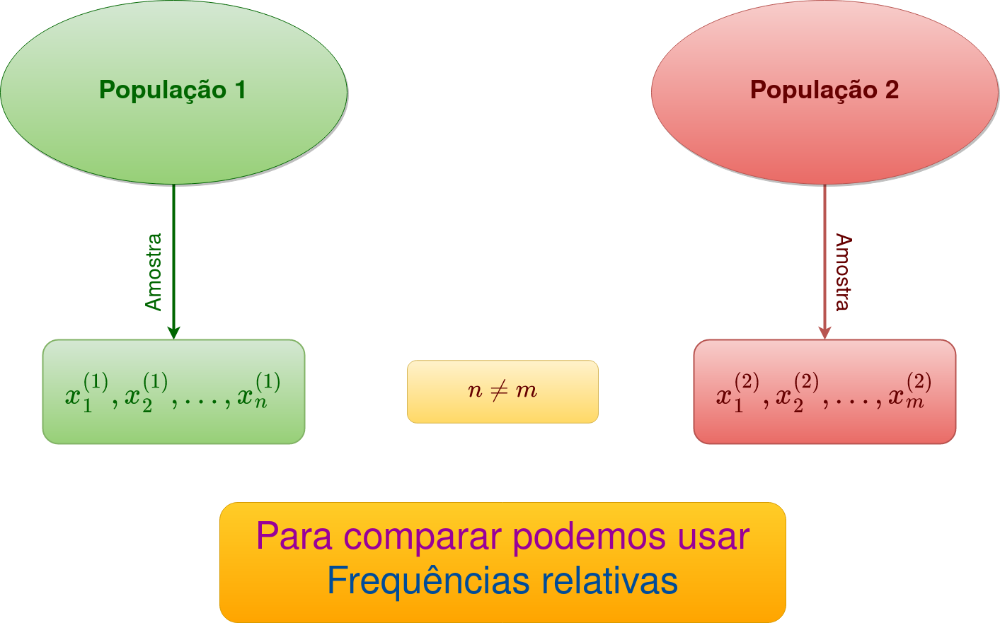
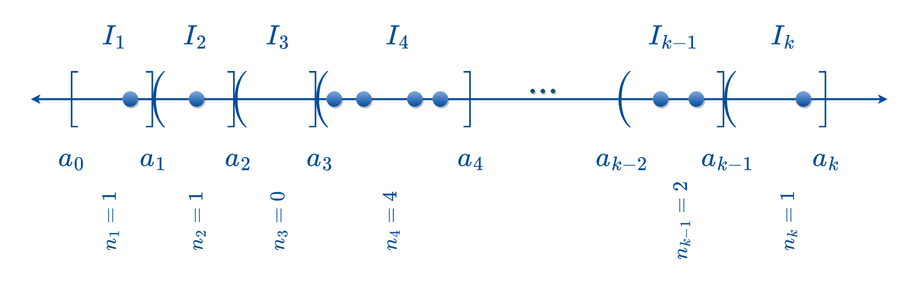
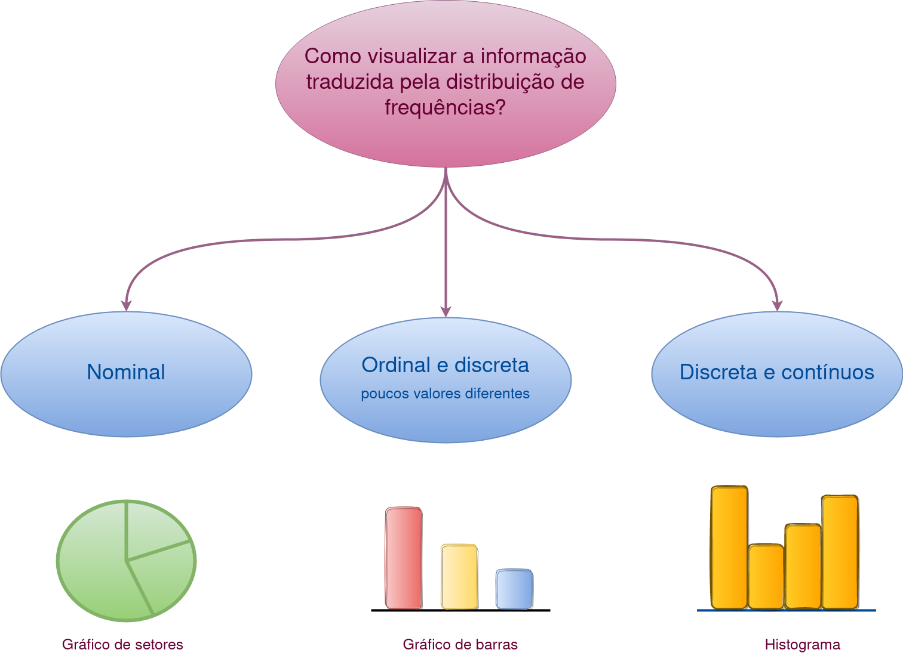

2 Análise descritiva de dados
A Estatística é a ciência dos dados. Fornece os princípios e os métodos para planejar, coletar, classificar, resumir, organizar, analisar e interpretar informações numéricas. O objetivo principal da Estatística é auxiliar a tomada de decisões em situações de incerteza com base em um conjunto de informações quantitativas.
2.1 Conceitos Fundamentais
Definição 2.1 (Dado) Fato e número coletado, analisado e sintetizado para apresentação e interpretação.
Definição 2.2 (Unidade experimental) Elemento (pessoa, objeto, transação, evento, etc.) a respeito do qual se coletam os dados.
Definição 2.3 (População) Conjunto de unidades experimentais que são objeto de estudo.
Definição 2.4 (Amostra) Subconjunto de unidades experimentais da população.
Definição 2.5 (Variável) Característica ou propriedade da unidade experimental. Chama-se assim devido ao fato de que qualquer característica pode variar entre unidades experimentais de uma população.
Definição 2.6 (Medição) Processo usado para atribuir números às variáveis de unidades experimentais distintas. A medição pode ser realizada usando equipamentos específicos, questionários ou contagens.
Definição 2.7 (Observação) Conjunto de medidas obtidas, correspondentes a determinada unidade experimental.
Definição 2.8 (Censo) Processo no qual as variáveis são medidas para cada unidade experimental da população. É vantajoso em situações onde a população é pequena, quando se exige precisão completa e quando se dispõe de toda a informação necessária para atingir os objetivos do estudo.
Definição 2.9 (Pesquisa Amostral ou Amostragem) Processo de realização de uma pesquisa para coletar dados de uma amostra. É vantajosa quando a população é infinita (isto é, muito grande), quando há necessidade de destruir a unidade de observação ou por motivos operacionais, entre outros.
2.2 Técnicas de seleção de amostras aleatórias
Definição 2.10 A amostragem aleatória simples seleciona uma amostra de tamanho \(n\) de forma que TODAS as possíveis amostras de tamanho \(n\) tenham a mesma chance de serem selecionadas.
Definição 2.11 A amostragem aleatória estratificada classifica a população em pelo menos dois grupos ou estratos para selecionar uma amostra de cada um.
Definição 2.12 A amostragem aleatória por conglomerados divide a população em grupos ou setores, selecionam-se aleatoriamente alguns desses grupos e todos os elementos dos mesmos são observados.
2.3 Áreas da Estatística
A Estatística divide-se basicamente em:
Estatística Descritiva: É a primeira etapa da análise dos dados. Compreende técnicas para a organização, o resumo e a apresentação das observações. Se utilizada em uma amostra essas técnicas apenas descrevem os dados em questão;
Inferência Estatística: É um conjunto de técnicas que se baseia na teoria de probabilidade para extrapolar as informações de uma amostra para toda a população.
Um estudo estatístico pode ser representado por meio do seguinte esquema:

2.4 Estatística Descritiva
Frequentemente as pesquisas geram grandes quantidades de dados. A Estatística descritiva pode ser usada como uma ferramenta importante para o correto tratamento desses dados, através da qual podem ser obtidas conclusões válidas. É conduzida por meio de duas abordagens:
Representações tabulares e gráficas;
Medidas numéricas.
O tipo de variável sob estudo determina a abordagem a ser usada na análise.
2.4.1 Classificação das variáveis
As variáveis são classificadas de acordo com os valores que assumem. Elas podem ser:
Qualitativas (ou categóricas), se seus valores são categorias, qualidades ou atributos dos indivíduos. Ainda se subdividem em:
Ordinais: quando essas categorias admitem alguma ordenação lógica;
Nominais: quando esses atributos não podem ser ordenados logicamente;
Quantitativas, se seus valores são números, geralmente resultados de contagens ou medições. Ainda se subdividem em:
- Discretas: seus possíveis valores formam um conjunto finito, ou infinito enumerável.
Um conjunto é enumerável se é possível estabelecer uma bijeção entre seus elementos e um subconjunto de \(\mathbb{Z}\);
Um conjunto é enumerável se é possível estabelecer uma bijeção entre seus elementos e um subconjunto de \(\mathbb{Z}\);
- Contínuas: seus possíveis valores formam um conjunto não enumerável.
Esquematicamente:

2.4.2 Representação Tabular
2.4.2.1 Distribuição de frequências
Resumo tabular de dados mostrando o número (frequência absoluta) de elementos em cada uma das diversas classes ou categorias. No caso dos dados quantitativos, é necessário definir intervalos de valores não sobrepostos. Esquematicamente:
[Figura]
2.4.2.1.1 Casos qualitativo e quantitativo discreto (poucas observações diferentes)
Seja \(X\) uma variável. Suponha que \(x_1,x_2,\ldots,x_n\) são observações de \(X\). As observações \(x_1,x_2,\ldots,x_n\) podem ser os valores de \(X\) para a população completa ou apenas uma amostra de \(X\). Agora, considere que:
dos valores \(x_1,x_2,\ldots,x_n\), apenas \(k\leq n\) são diferentes;
o restante são apenas repetições desses valores;
sejam \(x_1^*,x_2^*,\ldots,x_k^*\) as observações diferentes;
suponha que o valor \(x_i^*\) se repetiu \(n_i\) vezes, \(i=1,2,\ldots,k\).
Definição 2.13 (Distribuição de frequências) A distribuição de frequências de \(X\) em \(x_1,x_2,\ldots,x_n\) é dada por
| \(X\) | \(x_1^*\) | \(x_2^*\) | \(x_3^*\) | \(\cdots\) | \(x_{k-1}^*\) | \(x_k^*\) | Total |
|---|---|---|---|---|---|---|---|
| Frequência | \(n_1\) | \(n_2\) | \(n_3\) | \(\cdots\) | \(n_{k-1}\) | \(n_k\) | \(\sum_{i=1}^kn_i=n\) |
Observações
Se \(X\) for ordinal ou discreta, os \(x_i^*\) devem ser dispostos de forma que \[x_1^* < x_2^* < \cdots < x_k^*;\]
A distribuição de frequências fornece um resumo considerável dos dados;
Neste caso, não há perda de informação ao utilizar essa técnica;
A frequência com que os valores de \(X\) ocorrem fica evidente;
Utiliza-se esse tipo de distribuição de frequências no caso discreto quando \(k\ll n\).
Exemplo 2.1 Seja \(X=\) “Tipo de música preferida”. Neste caso \(X\in\{p,r,s\}\), onde p: pagode, r: rock e s: sertanejo. Suponha que \(n=40\) pessoas foram entrevistadas e o valor de \(X\) para cada uma delas foi verificado. Os dados coletados são:
s p p p s p s s r p
s r p s r p s s p p
p s r s s p p p s s
p r s s r s p p p s
Portanto, a distribuição de frequências de \(X\) é dada por
| \(X\) | p | r | s | Total |
|---|---|---|---|---|
| Frequência | \(17\) | \(6\) | \(17\) | \(40\) |
Exemplo 2.2 O RH de uma empresa com \(600\) funcionários deseja fazer um levantamento com respeito à escolaridade (E) e número de filhos (N) dos mesmos. A variável escolaridade classificada em f (fundamental), m (médio) e s (superior). Uma amostra de \(n = 30\) funcionários forneceu as seguintes observações:
A tabela de frequências para a variável E obtem-se a partir da contagem das unidades observadas em cada categoria da variável, i.e,
| E | f | m | s | Total |
|---|---|---|---|---|
| Frequência | \(12\) | \(8\) | \(10\) | \(30\) |
Análogamente, a distribuição de frequências da variável N é dada por:
| N | 0 | 1 | 2 | 3 | Total |
|---|---|---|---|---|---|
| Frequência | \(2\) | \(11\) | \(12\) | \(5\) | \(30\) |
2.4.2.2 Distribuição de frequências relativas
Constantemente interessa determinar a proporção ou porcentagem de items em cada classe da variável. A frequência relativa de uma classe é igual à fração ou proporção de unidades experimentais que pertencem a uma classe. Particularmente útil quando interessa comparar duas ou mais populações com diferentes tamanhos. Considere o seguinte esquema:

Definição 2.14 (Frequências relativas) Seja \(X\) uma variável com a seguinte distribuição de frequências:
| \(X\) | \(x_1^*\) | \(x_2^*\) | \(x_3^*\) | \(\cdots\) | \(x_{k-1}^*\) | \(x_k^*\) | Total |
|---|---|---|---|---|---|---|---|
| Frequência | \(n_1\) | \(n_2\) | \(n_3\) | \(\cdots\) | \(n_{k-1}\) | \(n_k\) | \(\sum_{i=1}^kn_i=n\) |
A frequência relativa do i-ésimo valor \(x_i^*\) é definida por \(f_i=\frac{n_i}{n}\). A distribuição de frequências relativas é dada por:
| \(X\) | \(x_1^*\) | \(x_2^*\) | \(x_3^*\) | \(\cdots\) | \(x_{k-1}^*\) | \(x_k^*\) | Total |
|---|---|---|---|---|---|---|---|
| Frequência | \(f_1\) | \(f_2\) | \(f_3\) | \(\cdots\) | \(f_{k-1}\) | \(f_k\) | \(\sum_{i=1}^kf_i=1\) |
Exemplo 2.3 Continuando com o Exemplo 2.2, suponha que todos os \(600\) funcionários foram questionados e que as distribuições de frequências das variáveis Escolaridade (E) e Número de filhos (N) são, respectivamente, dadas por:
| E | Frequência | Frequência relativa |
|---|---|---|
| f | \(230\) | \(\frac{230}{600}=0.3833\) |
| m | \(180\) | \(\frac{180}{600}=0.3000\) |
| s | \(190\) | \(\frac{190}{600}=0.3167\) |
| Total | \(600\) | \(\frac{600}{600}=1.0000\) |
| N | Frequência | Frequência relativa |
|---|---|---|
| 0 | \(30\) | \(\frac{30}{600}= 0.0500\) |
| 1 | \(230\) | \(\frac{230}{600}=0.3833\) |
| 2 | \(235\) | \(\frac{235}{600}=0.3917\) |
| 3 | \(105\) | \(\frac{105}{600}=0.1750\) |
| Total | \(600\) | \(\frac{600}{600}=1.0000\) |
Para a amostra, temos que:
| E | Frequência | Frequência relativa |
|---|---|---|
| f | \(12\) | \(\frac{12}{30}=0.4000\) |
| m | \(8\) | \(\frac{8}{30}= 0.2667\) |
| s | \(10\) | \(\frac{10}{30}=0.3333\) |
| Total | \(30\) | \(\frac{30}{30}=1.0000\) |
| N | Frequência | Frequência relativa |
|---|---|---|
| 0 | \(2\) | \(\frac{2}{30}= 0.0667\) |
| 1 | \(11\) | \(\frac{11}{30}=0.3667\) |
| 2 | \(12\) | \(\frac{12}{30}=0.4000\) |
| 3 | \(5\) | \(\frac{5}{30}=0.1666\) |
| Total | \(30\) | \(\frac{30}{30}=1.0000\) |
2.4.2.2.1 Casos quantitativos contínuo e discreto (muitas observações diferentes)
Neste caso: \(x_1,\ldots,x_n\) tem muitas (ou todas) observações diferentes; o método anterior nem resume e nem extrai informação dos dados.
Alternativa - Agrupar valores próximos em intervalos, assim
Escolha \(a_0<a_k\) tais que \(x_1,\ldots,x_n\in[a_0,a_k]\);
Fixe uma partição \(I_1=[a_0,a_1]\), \(I_i=(a_{i-1},a_i]\), \(i=2,\ldots,k\), isto é, \[\bigcup_{i=1}^kI_i=[a_0,a_k] \hbox{ e } I_i\cap I_j=\emptyset, i\neq j;\]
A frequência \(n_i\) é o número de observações do intervalo \(I_i\).

Definição 2.15 (Frequências relativas) A distribuição de frequências dos dados \(x_1,\ldots,x_n\) é definida por
| \(X\) | \([a_0,a_1]\) | \((a_1,a_2]\) | \(\ldots\) | \((a_{k-1},a_k]\) | Total |
|---|---|---|---|---|---|
| Frequência | \(n_1\) | \(n_2\) | \(\ldots\) | \(n_k\) | \(\sum_{i=1}^kn_i=n\) |
Amostras de tamanhos diferentes são comparadas por meio de suas frequências relativas.
A distribuição de frequências relativas é dada por:
| \(X\) | \([a_0,a_1]\) | \((a_1,a_2]\) | \(\ldots\) | \((a_{k-1},a_k]\) | Total |
|---|---|---|---|---|---|
| Frequência | \(f_1\) | \(f_2\) | \(\ldots\) | \(f_k\) | \(\sum_{i=1}^kf_i=1\) |
onde \(f_i=\dfrac{n_i}{n}\) com \(i=1,2,\ldots,k\).
Problema: Se os intervalos forem de grande amplitude, possivelmente haverá frequência relativa alta. Pode-se contornar esta situação por meio de duas alternativas:
2.4.3 Representação gráfica

https://themockup.blog/posts/2020-09-04-10-table-rules-in-r/
this line has a yellow background.